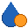
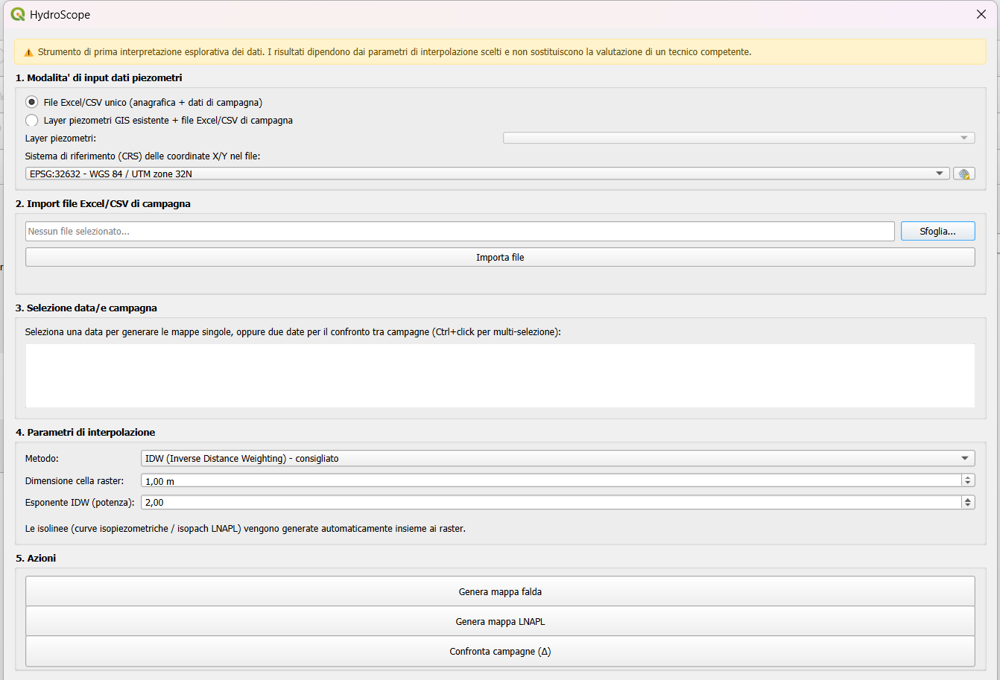
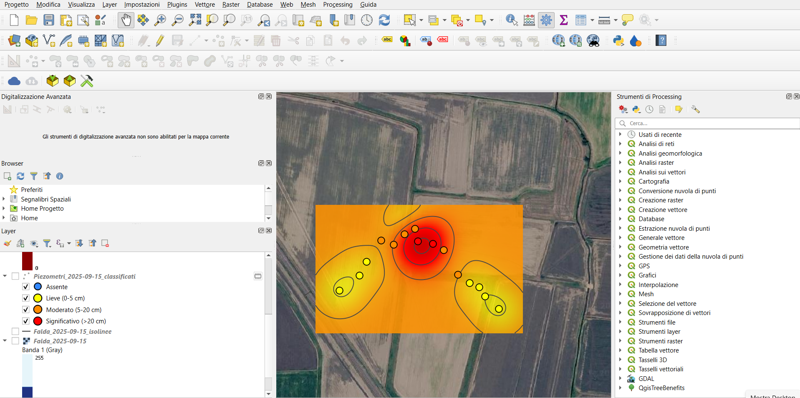

Plugin QGIS per trasformare i dati di monitoraggio piezometrico — falda e LNAPL — in layer geospaziali pronti per una prima interpretazione spaziale.
HydroScope prende i dati di monitoraggio piezometrico — un file Excel/CSV con soggiacenza e spessore LNAPL, opzionalmente affiancato a un layer GIS già esistente — e li trasforma in layer GIS pronti per la mappatura: superfici interpolate della falda, mappe di spessore LNAPL classificate automaticamente, isolinee, e layer di variazione tra campagne diverse. Nessun report PDF o Word: solo layer geospaziali con simbologia già impostata.
Quota piezometrica della falda e spessore LNAPL, con metodo IDW o Ordinary Kriging (selezione automatica del variogramma).
Assente / lieve / moderato / significativo, calcolata automaticamente sulle soglie di spessore standard.
Layer di variazione (Δ) tra due date, per vedere a colpo d'occhio dove la situazione migliora o peggiora.
Un solo file Excel/CSV con anagrafica + campagne, oppure un layer piezometri già esistente + file di sole misure.


Istruzioni complete, requisiti e dataset demo incluso sono descritti nel README del repository.